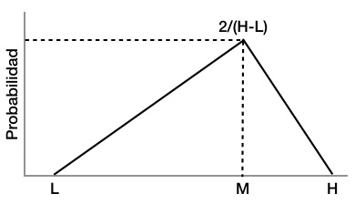

Simulación¶
60 min | Ultima modificación: Junio 22, 2019
En muchas ocasiones es necesario estimar la probabilidad de una variable para resolver un problema, pero resulta imposible realizar la numeración de los eventos o determinar su distribución de probabilidades. En estos casos, la simulación es utilizada con el fin de realizar experimentos computacionales para poder describir el comportamiento de un sistema. Uno de los elementos fundamentales de la simulación, es la capacidad para generar números aleatorios que sigan una distribución teórica de probabilidades con el fin de poder realizar los experimentos. En este tutorial se presentan los elementos fundamentales de la simulación y como está puede ser usada para resolver problemas.
Definición del problema¶
Se desea realizar el análisis financiero de un proyecto de inversión con las siguientes características:
La inversión inicial estimada es 1.000 y se realizar en el primer período.
Los ingresos por período son aproximadamente 500.
Los costos totales por periodo son aproximadamente 200.
La decisión debe basarse en el valor presente neto (VPN) con una tasa de descuento del 2% por período. El proyecto tiene un período para inversión y cinco períodos operativos.
Una estimación puntual del VPN del problema descrito no es realmente informativa para la decisión, ya que no da información sobre los valores en este indicador financiero puede variar. Para ello, se ha realizado una indagación posterior con los equipos técnicos a cargo del proyecto y se ha llegado a la siguiente información respecto al proyecto:
La inversión inicial puede modelarse como una distribución normal con media 1.000 y desviación estándar de 50.
Los ingresos siguen una distribución normal con media 500 y desviación estádar de 80.
Los costos totales por periodo siguen una distribución normal con media 200 y desviación estándar de 40.
Solución del problema propuesto¶
Conceptos teóricos¶
Definición y usos¶
A continuación se presentan tres definiciones de simulación:
Simulación es un técnica numérica para conducir experimentos en una computadora digital. Estos experimentos comprenden ciertos tipos de relaciones matemáticas y lógicas, las cuales son necesarias para describir el comportamiento y la estructura de sistemas complejos del mundo real a través de largos períodos de tiempo (T.H. Naylor).
Simulación es una técnica numérica para realizar experimentos en una computadora digital. Estos experimentos involucran ciertos tipos de modelos matemáticos y lógicos que describen el comportamiento de sistemas de negocios, económicos, sociales, biológicos, físicos o químicos a través de largos períodos de tiempo (H. Maisel y G. Gnugnoli).
Simulación es el proceso de diseñar y desarrollar un modelo computarizado de un sistema o proceso y conducir experimentos con este modelo con el propósito de entender el comportamiento del sistemao evaluar varias estrategias con las cuales se puede operar el sistema (R. E. Shannon).
Etapas para realizar un proceso de simulación¶
La solución de un problema mediante simulación requiere las siguientes etapas:
Definición del sistema (y del problema). Variables, horizonte, comportamiento esperado.
Formulación del modelo (estructura).
Colección de datos.
Implementación del modelo en la computadora.
Validación del modelo.
Experimentación.
Interpretación.
Documentación del modelo y los resultados.
Factores a considerar¶
Los factores a considerar en el uso de la simulación son los siguientes:
Generación de variables aleatorias no uniformes
Lenguajes de programación
Condiciones iniciales
Tamaño de la muestra
Diseño de experimentos.
Ventajas del uso de la simulación¶
Entre las principales ventajas del uso de la simulación están las siguientes:
Estudio del efecto de cambios internos y externos de un sistema.
Mejora del entendimiento y comprensión del sistema.
Uso como un instrumento pedagógico.
Experimentación con nuevas situaciones.
Uso como herramienta para el entrenamiento de personal.
Anticipación del efecto de nuevos elementos en un sistema.
Ejemplos típicos de usos de simulación¶
La simulación es comúnmente utilizada para la solución de problemas relacionados con:
Sistema de colas.
Sistema de inventarios.
Sistemas económicos.
Estados financieros.
Selección de las distribución de probabilidades de las variables de entrada¶
Si hay suficientes datos se busca la distribución que mejor se ajusta a los datos (véase el tutorial anterior sobre este tema).
Si no hay suficientes datos o ausencia de ellos se pueden utilizar distribuciones como la triangular, la cual aparece en la gráfica de abajo.

Su distribución acumulada de probabilidad es:
Generación de aleatorios¶
Una vez se tiene la distribución de probabilidades para todas las variables de entrada, se requiere la generación de números aleatorios para realizar el proceso de simulación.
Generador congruencial mixto¶
La secuencia de aleatorios es generada como
donde:
\(x_0\) es la semina del generador.
\(a, \; c > 0\) son los parámetros del generador.
\(m\) es el módulo del generador (\(m > x_0\), \(m > a\), \(m > c\)).
Ejemplo.— \(x_{n+1} = (5 x_n + 7) \text{ mod } 8\) con \(x_0 = 4\) (verifique los cálculos).
n x[n] x[n+1] Aleatorio
--------------------------------
0 4 3 + 3/8 3/8
1 3 2 + 6/8 6/8
2 6 4 + 5/8 5/8
3 5 4 + 0/8 0
Generador congruencial multiplicativo¶
La secuencia de aleatorios es generada como
donde:
\(x_0\) es la semina del generador.
\(a\) eso el parámetro del generador.
\(m\) es el módulo del generador (\(m > x_0\), \(m > a\)).
Ejemplo.— \(x_{n+1} = 3 x_n \text{ mod } 100\) con \(x_0 = 17\) (verifique los resultados).
n x[n] n x[n] n x[n] n x[n] n x[n]
----------------------------------------------------
1 51 5 31 9 11 13 91 17 71
2 53 6 93 10 33 14 73 18 13
3 59 7 79 11 99 15 19 19 39
4 77 8 37 12 97 16 57 20 17
Note que el período del generador es 20.
Ejercicio.— Genere 100 números uniformes (\(u_1\), \(u_2\), …, \(u_{100}\)); forme parejas (\(u_1\), \(u_2\)), (\(u_2\), \(u_3\)), …, (\(u_{99}\), \(u_{100}\)) y grafique los puntos en el plano cartesiano. ¿Qué observa?
Método de la inversa transformada¶
En este método se genera un número aleatorio uniforme en el intervalo [0, 1] y luego se busca el punto \(x\), tal que el función de densidad de probabilidada acumulada tenga este mismo valor.

Ejemplo.— Sea la distribución exponencial:
Su distribución acumulada es:
Haciendo la distribución acumulada igual al número aleatorio uniforme \(U\):
Análisis estadístico de los resultados de la simulación¶
El análisis estadístico de los resultados de la simulación se realiza aplicando técnicas de análisis exploratorio de datos para determinar sus propiedades, y en particular, la media y la varianza muestrales.
Calculo de la media muestral y la varianza muestral¶
Sea una secuencia \(\{x_i; i=1, ...,n\}\) proveniente de una distribución poblacional \(F\) desconocida con media \(\mu\) y varianza \(\sigma^2\). Por el Teorema Central del Límite:
Entonces:
donde \(z_{\alpha / 2}\) es \(F(z_{\alpha / 2}) = 1 - \alpha / 2\).
Al despejar se obtiene que:
que es la probabilidad de que \(\mu\) esté en el intervalo señalado. Ya que \(\sigma^2\) es desconocido, debe ser reemplazado por su estimación a partir de la muestra de datos.
Ya que \(\bar{x}_n\) sigue una distribución para normal cuando \(n\) tiende a infinito, entonces la normal se reemplaza por una distribución \(t\) de Student con \(n-1\) grados de libertad.
Ejemplo.— Cómo se puede estimar la media muestral con una precisión determinada \(d\) pero se desconoce el valor adecuado de \(n\).
Paso 1: Se selección un número inicial de simulaciones \(n\), con \(n \le 30\).
Paso 2: Se realiza la simulación y se estiman \(\bar{x}_n\), \(\sigma^2_n\) y la precisión:
Paso 3: Si
\[t_{\alpha / 2} \frac{\sigma}{\sqrt{n}} \; > \; d\]entonces se hace \(n=n+1\) y se realiza una nueva simulación, con:
\[\bar{x}_{n+1} = \bar{x}_n + \frac{x_{n+1} - \bar{x}_n}{n+1}\]\[\sigma_{n+1}^2 = \frac{1}{n} \left\{ (n-1) \sigma^2_n + n\bar{x}_n + x^2_{n+1} - (n+1)\bar{x}^2_{n+1} \right\}\]Paso 4: Se vuelve al Paso 2.
Proceso de solución¶
A continuación se define el proceso de solución del problema propuesto.
Definición del sistema¶
El problema consta de cuatro variables aleatorias:
La inversión inicial con \(I \sim N(1000, 50)\).
Los ingresos por período \(x_i \sim N(500, 80)\) para \(i=1,...,5\).
Los costos por período \(y_i \sim N(200, 60)\) para \(i=1,...,5\).
El valor presente neto (VPN).
Definición del modelo¶
Las variables están relacionadas mediante el siguiente modelo matemático que representa el cómputo del VPN:
donde \(r=2\)%.
Implementación del modelo computacional y simulación¶
El modelo computacional es el siguiente:
[1]:
## variable para recolectar los valores del VPN
vpn = c()
## realiza la simulación 5000 veces
for(sim in 1:5000) {
## Inversión
I = rnorm(1, mean = 1000, sd = 50)
## valor inicial del VPN
vpn_sim = -I
for(t in 1:5) {
## genera la inversión para el periodo t
x <- rnorm(1, mean = 450, sd = 80)
## genera el costo para el periodo t
y <- rnorm(1, mean = 200, sd = 60)
## acumula la componente del VPN del periodo t
vpn_sim = vpn_sim + (x - y) / (1 + 0.02)^t
}
## almacena el resultado del VPN para la
## simulación actual
vpn[sim] = vpn_sim
}
Interpretación y resultados¶
Para analizar los resultados se computa un resumen y se grafica el histograma.
[2]:
summary(vpn)
Min. 1st Qu. Median Mean 3rd Qu. Max.
-665.15 29.78 177.32 173.71 322.49 879.13
[3]:
## desviación estándar del VPN
sd(vpn)
[4]:
## se grafica el histograma
hist(vpn, freq=FALSE)
## se grafica la normal equivalente
z <- seq(from = min(vpn), to=max(vpn), by=10)
fz = dnorm(z, mean=mean(vpn), sd = sd(vpn))
lines(z, fz, type='l', col='red', lwd=2)
[5]:
## Probabilidad de pérdida (VPN <= 0)
pnorm(0, mean=mean(vpn), sd = sd(vpn))
Actividad.— Determine la probabilidad de quiebra para el juego de dados 7-11, también conocido como dados callejeros. Las reglas del juego son las siguientes:
El jugador tira los dados por primera vez.
Si saca 7 o 11 gana la apuesta inmediatamente.
Si saca 2, 3 o 12 pierde la apuesta inmediatamente.
Si saca 4, 5, 6, 8, 9, 10, sigue tirando los dados.
El jugador sigue tirando hasta que:
Saque 7, en cuyo caso pierde.
Saque la misma cantidad de la primera tirada, en cuyo caso gana.
En cada juego se apuesta
$1 y se cuenta con un capital inicial de$20.
El jugador se retira si alcanza un capital de $ 50.
Actividad.— Para los casos de quiebra, determine el histograma de frecuencias del tiempo en que se alcanza la quiebra.
Actividad.— Para los casos de retiro por alcanzar el capital de $ 50, estime el histograma de frecuencias del tiempo en que se alcanza el retiro.